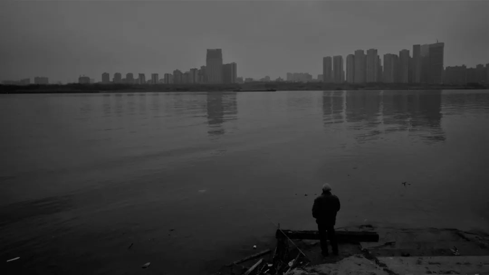
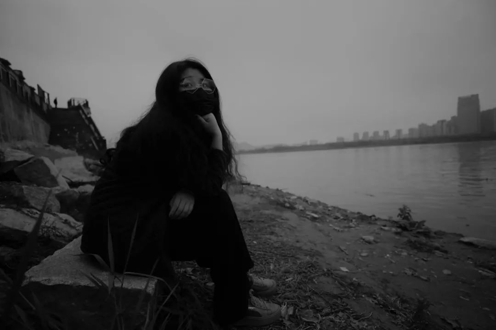
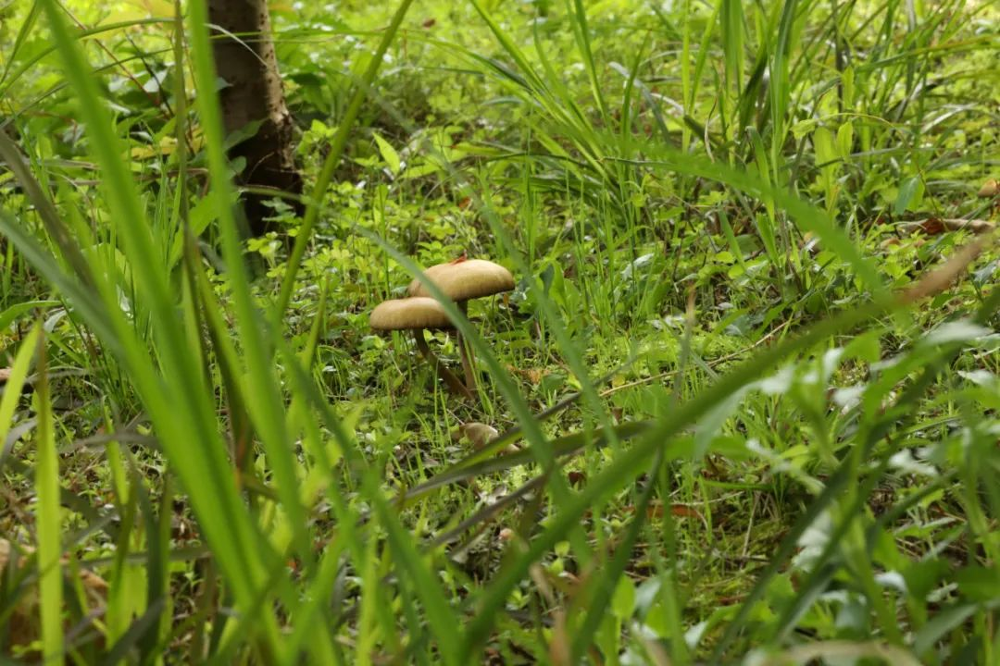
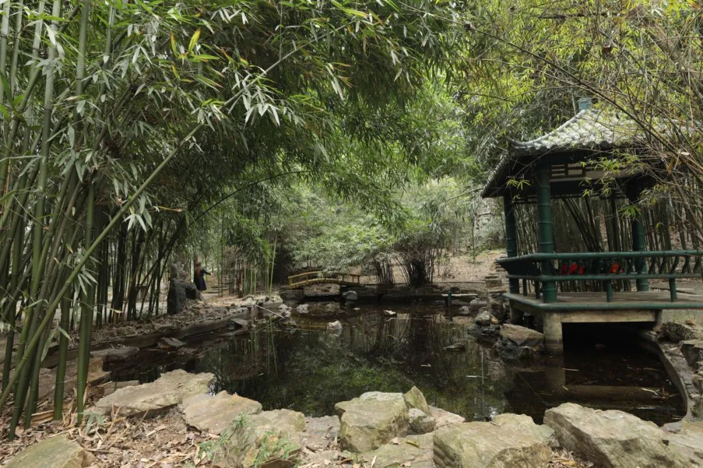

没有出门的时候让自己有去学一些乱七八糟的东西，比如在互联网上游走的Spider技术。偶尔也会在想去编译前端的人怎么每天就按着这些东西想来想去，真是不简单。
拍下这两张图的时候，决定了我那天一定要出去玩。多好看的日出呀，这是冬天过去之后第一个日照明媚的早晨。
是我积攒下来四次出街没有写的第一册。出门也不太利索，试着试着来
我觉得最有意味的是glimpsing 读起来也叮叮当当
虽然题材相同。颜色差很多也编在一起是不是不太好hmmm不管是我们在一处小巷内，四周的墙瓦隔开外界的噪音喧嚣，自行车从身后传来一阵铃铛声。我短暂地搁置了和朋友凸造型的计划，看似是因为巷道狭窄所以得偏倒一边让人先过，但其实是因为我想抓拍。效果也真不错，明显错位的构图，却把故事性交代得很清楚。有点像那个猫咪摄像师，把相机挂在猫的脖子上看猫能拍到什么。这张已经是我的锁屏背景好多天了，至今没有要换掉的意思

傍晚断黑，让白平衡接近于冷一些的色调。除了必要的裁剪外我没有做更多修整


我最有分享欲的是在这时候，低洼地上栽种的油菜花、稍高一点的马路路基上驶过颜色明亮的车辆、电线杆和电线为画面提供生硬而不突兀的分割、远山和天空一同构造常态的自然没有用一般的暖色来表达这时候的心情，但是却在浅蓝减色的环境当中愈发动人了起来。不失为一次其妙的尝试。很像电影拍摄地的巡礼，就算我无心的构图被拉出来说是学院也很开心



可能春花静物，再也没有比这张蜜蜂和秒速五厘米，更出彩的了吧
当然了，给奶奶外婆的话还是应该这种大光圈。像学音乐时候的练习曲
其实是在说我自己。看了下底稿，原图1776张。选辑了128张出来，出片率也就是大概每一百张出个七八张的样子。有些是朋友们觉得还不错的，但我自己并看不下去。像那种乡间小路上，油菜花地边路过红色的卡车头，我自己端详着就会脑内故事，然后根本无心修图就去想别的去了。所以一直情绪劳动至今
这张可以肯定是我，三月份最满意的自拍。说是今年度也有可能，但话不要说得太早太满。最近修图驱动降低正同于文字放飞的部分减少，看看同期。写完又可以出门辽